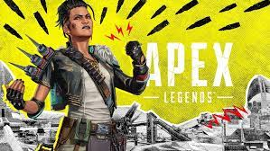

Defiance
Apex Legends Season 12 has begun! February 8th, the 12th season of Apex Legends officially launched to the public. A smooth launch, only with some smalls bugs and glitches. I find it very fun, Maggie is a balanced character, not overpowered, and is fun to play as. The map update to the Olympus map is nice, it fixed some areas that I really disliked. And the anniversary event is nice too, with a bunch of freebies to get and a good event to go with it.
Volutpat odio facilisis mauris sit amet massa vitae tortor condimentum. Aliquet eget sit amet tellus cras adipiscing. Quis viverra nibh cras pulvinar mattis. Risus sed vulputate odio ut enim blandit. Quisque id diam vel quam elementum pulvinar etiam non quam. Porta nibh venenatis cras sed felis eget.